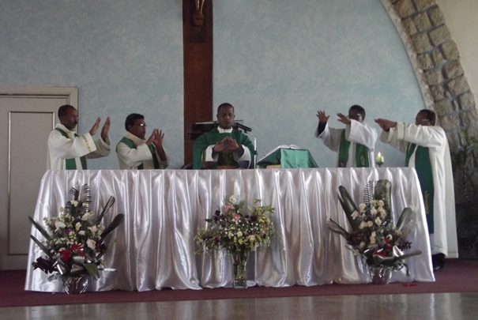

Des séminaristes
La formation presbytérale concerne le séminariste mais dans son parcours, il est lui-même « le protagoniste nécessaire et irremplaçable de sa formation » . Sans l’adhésion libre, consciente et volontaire du concerné aux dimensions de la formation au cheminement vers le Sacerdoce, personne ne peut accéder à la vie presbytérale. C’est en acceptant de se former que le candidat acquiert la maturité requise pour le Sacerdoce.
Pour cette année académique 2019-2020, l’effectif total des séminaristes résidents au GSTF est de 172 dont 56 en 2ème année de Théologie, 60 en 3ème année et 56 en 4ème année. Les séminaristes de la 4ème année ont déjà reçu les ministères de lectorat et d’acolytat. Chaque séminariste assure aussi un ministère dans une école catholique (pour ceux de la 1ère année) ou dans une paroisse (pour les restes).
Des éducateurs

Les éducateurs (Messe communautaire)
L’équipe formatrice est constituée de prêtres nommés par l’Évêque diocésain avec l’approbation des autres Évêques de la circonscription ecclésiale pour le Grand Séminaire interdiocésain comme le cas du GSTF. Ces prêtres formateurs « choisis et compétents » ont pour responsabilité d’amener chaque séminariste à percevoir ce que sera sa vie de prêtre et à commencer de la vivre.
Comme le stipule la Ratio fundamentalis Institutionis Sacerdotalis , la communauté formatrice au Séminaire est composée du Recteur, d’un « coordinateur de la dimension spirituelle », d’un « coordinateur de la dimension intellectuelle » et d’un « coordinateur de la dimension humaine ». Pour qu’il y ait efficacité dans la formation, « il faut… que les formateurs soient présents à plein temps et qu’ils soient avant tout des témoins par leur amour et leur service du peuple de Dieu, en se dépensant sans compter pour l’Église » .
Actuellement, il y a cinq Prêtres envoyés par leur respectif Evêque pour former l’équipe éducatrice au GSTF. Ils sont issus des quatre Diocèses formant la Province Ecclésiastique du Centre : Antananarivo, Antsirabe, Miarinarivo et Tsiroanomandidy.
- RAHERITIANA Bruno Nicolas, prêtre du diocèse d’Antananarivo, coordinateur de la dimension intellectuelle.
- RAKOTONDRAMADY Jean-Baptiste, prêtre du diocèse de Miarinarivo, économe.
- RAFALIMANANA Jean Stephenson, prêtre du diocèse de Tsiroanomandidy, coordinateur de la dimension humaine.
- RANDRIAMANOHY Germain Julien, prêtre du diocèse d’Antsirabe, coordinateur de la dimension spirituelle.
- RAFIDISON Abdon, prêtre du diocèse d’Antananarivo, Recteur.
- A part ces cinq Prêtres, il y a la Sœur Alice RAHARIVELO de la Congrégation « Zanaka Vavin’ny Eglizy », domiciliée à la Communauté d’Andohalo pour assurer l’intendance. L’enseignement est assuré par vingt-cinq (25) Prêtres (diocésains et religieux) et une laïque. A part tout cela, il y a aussi onze (11) personnels laïcs pour assurer d’autres services (1 secrétaire, 1 bibliothécaire, 3 cuisiniers, 2 jardiniers, 2 pour la ménage, 2 gardiens).
1. Pastores Dabo Vobis 69.
2. Ratio Fundamentalis Institutionis Sacerdotalis 132. Cf. Directives sur la préparation des éducateurs dans les séminaires, n°1 : Enchiridion Vaticanum 13 (1996), 3151-3152.
3. CONGREGATION POUR LE CLERGE, Le don de la vocation presbytérale, 8 Décembre 2016, N° 132-139.
4. Ratio Fundamentalis Institutionis Sacerdotalis 49 ; cf. Pastores Dabo Vobis 66 : « Il est opportun qu'il jouisse d'une certaine stabilité et qu'il ait sa résidence habituelle dans la communauté du séminaire ».